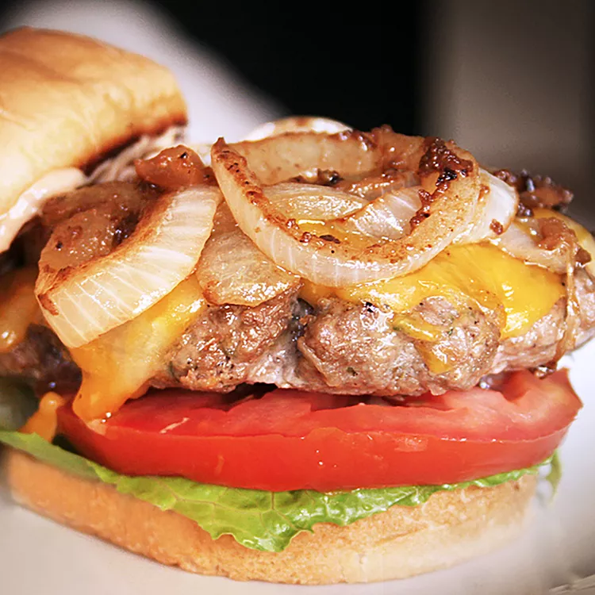

Hamburger

Description
A declicious juicy hamburger that can be prepared
in 20 minutes. Add your favorite condiments to spice up
the flavor.
Ingredients
- Lean ground beef
- Onion
- Colby Jack or Cheddar cheese
- Egg
- Dry onion soup mix
- Garlic
- Garlic powder
- Soy sauce
- Worcestershire sauce
- Dried parsley
- Dried basil
- Dried oregano
- Crushed dried rosemary
- Salt and pepper
Steps
- Preheat and outdoor grill for high
heat and lightly oil the grate.
- Meanwhile, combine ground beef, onion,
cheese, egg, onion soup mix, minced garlic,
garlic powder, soy sauce, Worcestershire sauce,
parsley, basil, oregano, rosemary, salt, and
pepper in a large bowl. Use your hands to form
the mixture into 4 patties.
- Cook patties on the preheated grill until no
longer pink in the center and the juices run
clear, about 4 to 5 minutes per side. An
instant-read thermometer inserted into the
center should read at least 165 degrees F
(74 degrees C).